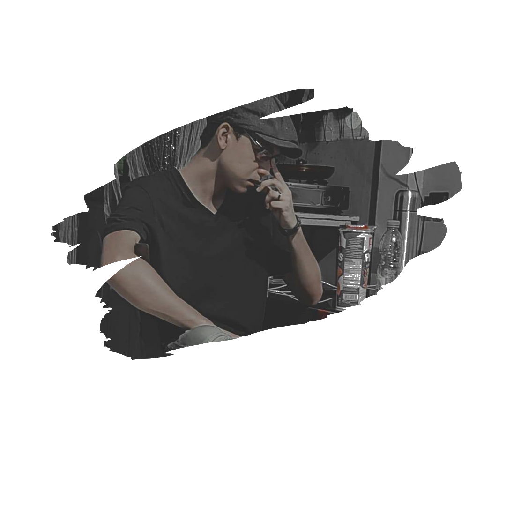

ComSci Student
Hi! I'm Jodan Rico, a 20-year-old Computer Science student with a passion for technology and creativity. Welcome to my website, where you can learn all about me and what I do!
Hi! I'm Jodan Rico, a 20-year-old Computer Science student with a passion for technology and creativity. Welcome to my website, where you can learn all about me and what I do!

I'm a passionate hobbyist with a love for variety! I enjoy skill toys like pen spinning, yoyoing, and speedcubing, and I dive into creative outlets like coding and cosplaying. I find excitement in exploring different skills and activities, always ready to try something new.
.jpg)
I love crafting smooth, eye-catching tricks with a yoyo, creating moves that flow seamlessly together!
.jpg)
I love stepping into the shoes of characters from my favorite shows and games.
I play video games and enjoy the challenge and excitement they bring!
Aphex Twin

Sleep Token
Death Grips
"It's really funny, because if you make up words, then people project their own meanings onto it."
- Aphex Twin